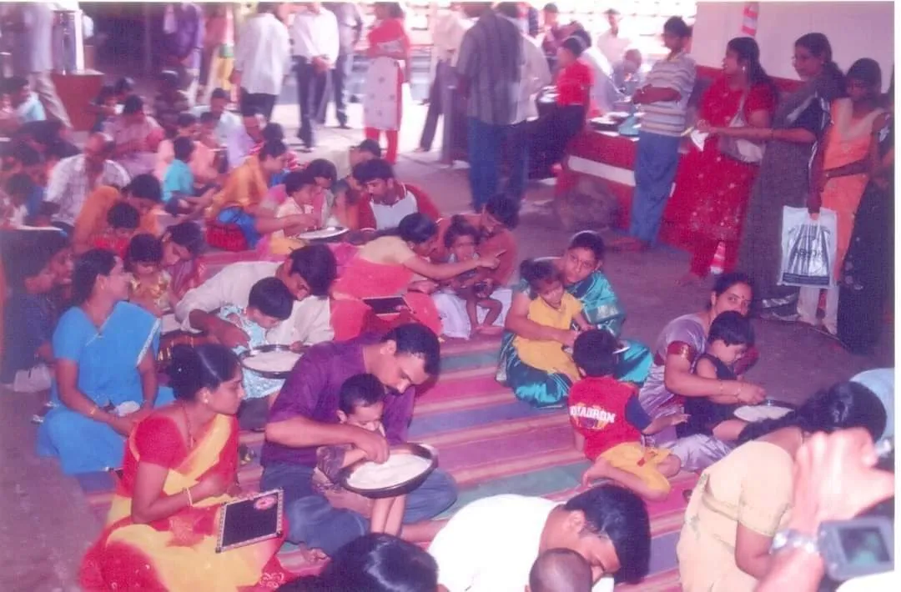
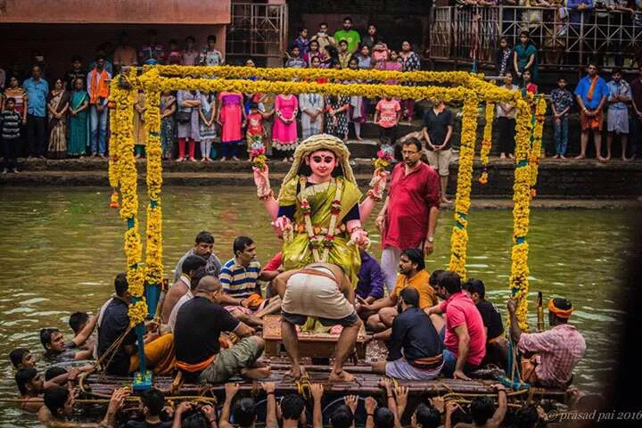
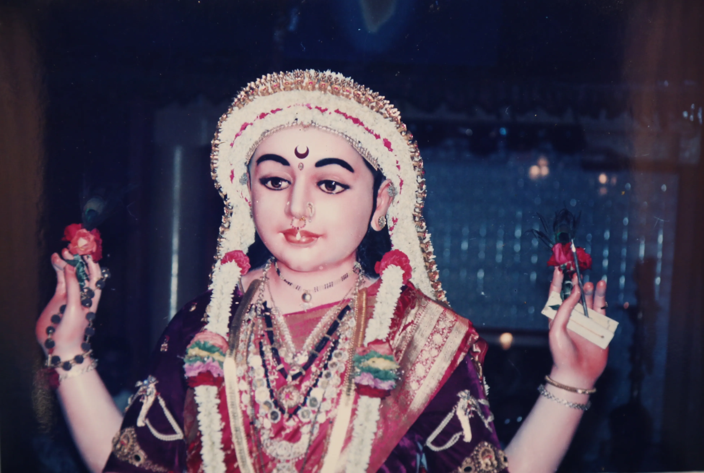
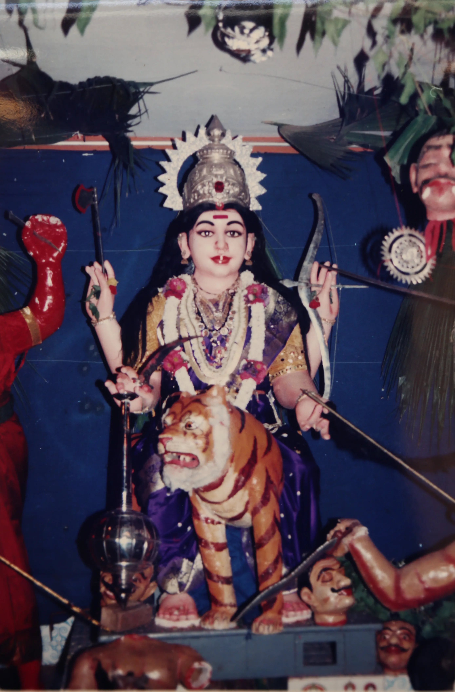
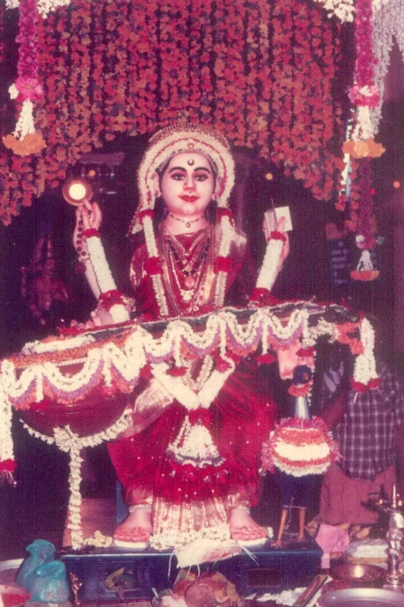
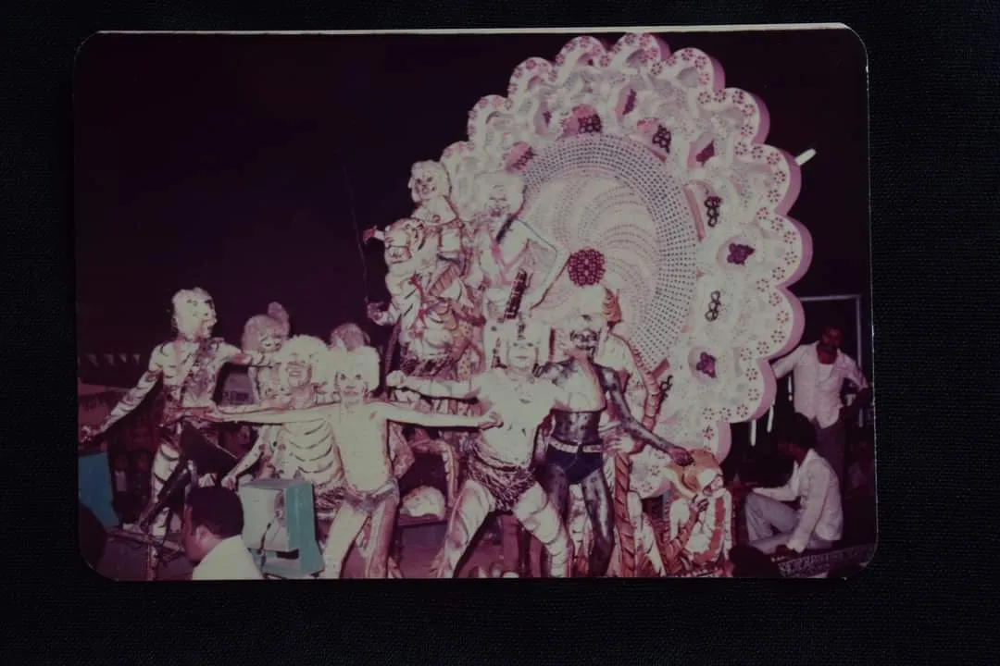

Sri Venkataramana Temple, Acharya Mutt Vasanth Mantap
Shree Sharada Mahotsava — History
INTRODUCTION
Mangaluru Sarvajanika Shree Sharadha Mahotsava is a century-old public celebration at Acharya Mutt Vasantha Mantap, Carstreet—Sri Venkataramana Temple, Mangalore. Renowned for vibrant devotion to Goddess Sharada (Saraswati), it features rich cultural participation and draws thousands annually.The festival lasts 5-10 days, starting with the ceremonial installation of a beautifully adorned clay idol of Goddess Sharada. Each day features devotional rituals, artistic alankars (including unique jasmine ‘son-phool’ hair arrangements), and vibrant deepalankara (lamp lighting) ceremonies.
History and Importance
- Began in the early 1920s through the Gowda Saraswat Brahmin (GSB) community, inspired by Ganeshotsav movements to foster unity and devotion during colonial times.
- Expanded from a GSB event to a major festival for all citizens, spawning similar Dasara and Sharada celebrations across coastal Karnataka.
- Celebrated its centenary in 2022 with grand rituals and cultural highlights; continues with increasing grandeur and inclusivity.
Rituals and Events
- The fest spans 5–10 days during Sharan Navaratri, featuring daily poojas and unique alankaras.
- The clay idol of Goddess Sharada, created by a local artist, is installed and worshipped in various alankaras, including Kali on select year.
- Signature ceremonies: Vidyarambha (learning initiation for children), Rangapuja, Deepalankara, and late-night processions (Shobha Yatra).
Community and Cultural Roots
- Devotees contribute voluntary donations (grain, groceries, artistry, ornaments) in large processions, reinforcing communal bonds.
- The Mahotsava is a hub for traditional arts, classical music, plays, and public feasts.
- The closing immersion (visarjan) procession is an emotional city-wide event with music, dance, and inclusive rituals.
Location & Recent Celebrations
Held primarily at Acharya Mutt Vasanth Mantap, Sri Venkataramana Temple, Carstreet. Artistic tradition flourishes annually, with specially woven sarees, gold and silver ornaments, and innovative floral alankars for the idol. The centenary year saw record offerings, special events, and recognition for thousands of meritorious students.
Origins and Expansion
Worship of Goddess Sharada traces back to GSB migration from Goa to Karnataka in the 16th century, connecting ancestry to the Saraswati river. Public-format Sharada Mahotsava began in 1922–23, inspired by Raja Ravi Varma’s artistic vision for the idol. The festival’s popularity led to the evolution of broader citywide celebrations and inspired the famed Mangaluru Dasara.
Cultural Significance
The festival embodies the GSB commitment to education, art, and collective spirit, engaging broader society beyond the community. Rituals like Vidyarambha and spectacular processions reinforce its status as both a spiritual and social cornerstone. The festival is recognized for fostering belonging, charity, and devotion in Mangaluru, with genuine public participation and voluntary giving.
Vishesha Deepalankar
Vishesha Deepalankar is an elaborate evening ritual where the venue and the idol of Goddess Sharada are adorned with hundreds of lamps and vibrant lighting, creating a truly sacred and celebratory atmosphere. Held on one of the festival evenings, this event draws large crowds of devotees, all participating in lighting lamps and singing hymns, marking a deeply communal moment of unity and devotion. The ritual is often accompanied by music, prayer, and decorated arrangements, reinforcing the symbolism of dispelling darkness and invoking divine blessings for knowledge and prosperity. This ceremony enhances the spiritual and cultural aura of the Mahotsava, making the festival's evenings especially memorable for participants and visitors alike.
Festival Moments





